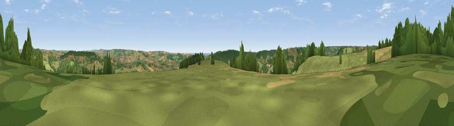

Viewpoint near Northleigh
#15412 in England · top 32% of its area beats it · near NorthleighThe view, rendered

A 360° render of this exact spot computed from the terrain model, tree cover and land cover — summer colours, afternoon light, calibrated against photographs of famous viewpoints. Real trees, hedges and buildings will differ in detail.
The panorama
Grey silhouette: terrain skyline in each direction (720 bearings, Earth curvature and refraction included). Dashed green: skyline with trees (+15 m) and buildings (+8 m) as obstacles. Blue strip: how far the ground is visible on each bearing.
Where the view opens
Wedge length = distance to the farthest visible ground on that bearing (vegetation-aware). Rings at 10, 25 and 50 km.
What fills the view
57% grassland · 27% woodland · 14% cropland · 1% water ·
Angular shares of the visible panorama (visual magnitude), not map area. Landscape diversity 0.45 (0–1 Shannon).
Key numbers
More beautiful places nearby
The staircase of upgrades: each row has a higher view potential than everything closer. Driving times are estimates from straight-line distance, calibrated against real road routing — check an actual route before setting out.
| Place | Direction | Drive | Score |
|---|---|---|---|
| Widworthy Hill | NNW · 2 km | ~6 min | 64.6 |
| Viewpoint near Seaton | SSE · 5 km | ~12 min | 67.3 |
| Viewpoint near Axmouth | SE · 6 km | ~13 min | 73.4 |
| Viewpoint near Axmouth | SE · 8 km | ~17 min | 78.5 |
| Viewpoint near Branscombe | S · 8 km | ~17 min | 80.5 |
| Viewpoint near Axmouth | SE · 9 km | ~18 min | 82.4 |
| Viewpoint near Sidmouth | SW · 15 km | ~27 min | 83.0 |
| High Peak | SW · 16 km | ~28 min | 85.3 |
50.76220, -3.10198 · source: screening · position refined by local search. Computed location — check access rights before visiting.